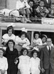
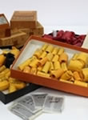

4 marzo 2017
Oposiciones al cuerpo de archiveros Toda la información sobre las pruebas selectivas para el ingreso libre en el Cuerpo Facultativo Superior de Archiveros
 4 diciembre 2017
Exposició virtual "Aquella escuela" Imágenes para el recuerdo que rememoran el paso por el colegio de distintas generaciones
4 septiembre 2017
Exposición falsos artísticos La Sala de Exposiciones del Archivo General de Castilla y León, en el Palacio del Licenciado Butrón (Valladolid), acoge la exposición...
 4 noviembre 2017
Consejos para preservasr nuestras fotografías familiares Pautas para organizar y conservar las imágenes que conforman la memoria doméstica de cada familia...